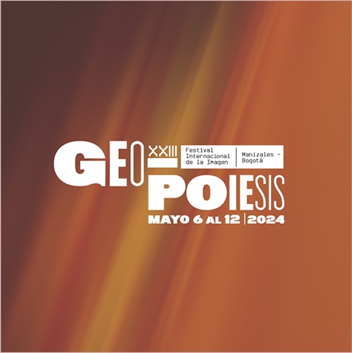
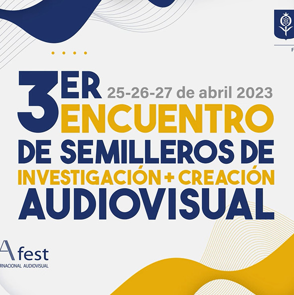

Reconocimientos
Reconocimientos obtenidos por proyectos de diseño interactivo y UX en contextos académicos y profesionales.
Integrante en Laboratorio de Contenidos Digitales
Integrante del proyecto transmedia No hay dolores menores, desarrollado de forma colaborativa con comunidades escolares en Ciudad Bolívar.
Ver proyecto →

Participación de la Exhibición "A Través de las Grietas"
Participación en el XXIII Festival Internacional de la Imagen, presentando un artefacto interactivo basado en cooperación.
Ver detalles →
Ganador en la Hackatón del Coloquio de An-Arqueología Realizado por IDARTES
En este proyecto, colaboré con mis compañeros en un desafío de diseño especulativo centrado en nuestras propias interpretaciones de las culturas y conocimientos ancestrales.
Ver certificado →

Ponente en el 3er Encuentro de Semilleros en Investigación Creación Audiovisual
Integrante del proyecto transmedia No hay dolores menores, desarrollado de forma colaborativa con comunidades escolares en Ciudad Bolívar.
Ver certificado →